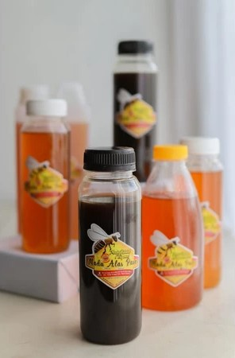
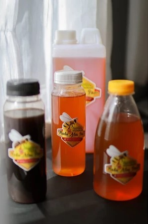
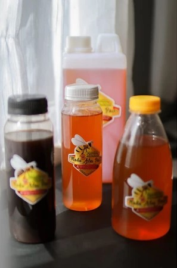
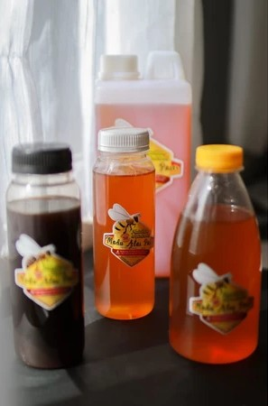

 


Madu Alas Paser adalah Rumah UMKM yang menjalin kerjasama dengan Kelompok Tani hutan (KTH) dan Kelompok Wanita Tani (KWT) yang membudidayakan lebah madu di sekitar kawasan hutan dan juga melakukan panen madu alam di kawasan hutan di Kabupaten Paser. Selain itu bekerjasama pula dengan para penggiat madu yang terorganisir secara legal di seluruh nusantara. Saat ini menyediakan 2 (dua) jenis madu, yakni Madu Hutan dari lebah jenis Apis dorsata dan Madu Kelulut (Stingless bee) dengan merk Madu Alas Paser.Madu Alas Paser merupakan madu hutan yang dihasilkan dari lebah liar yang hidup di hutan belantara Kalimantan, khususnya di Kabupaten Paser yakni jenis Apis dorsata.